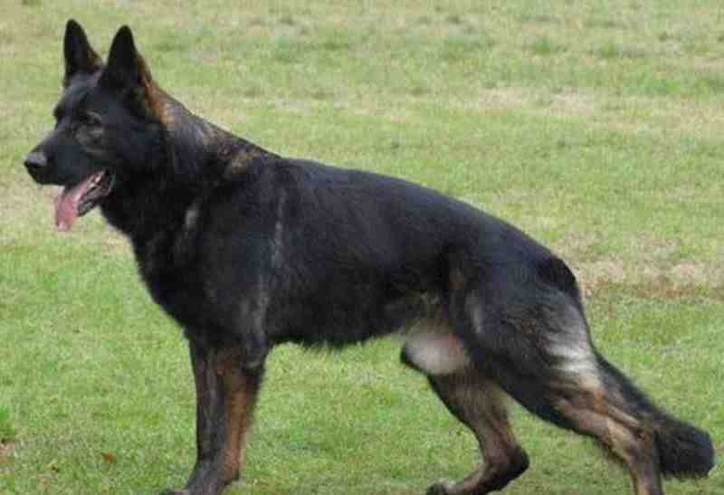
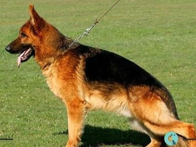
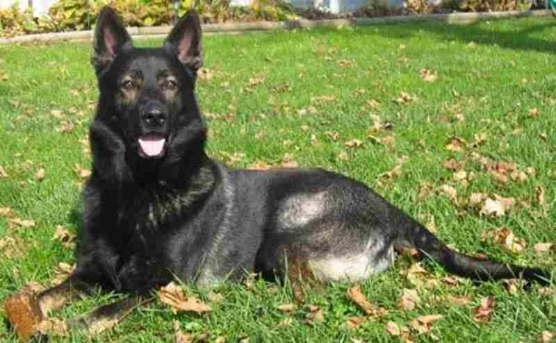
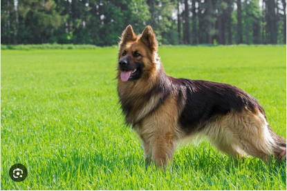

| Tipo | Descripción | Imagen |
|---|---|---|
| Pastor Alemán de Trabajo | Estos perros son criados para realizar tareas específicas, como el pastoreo y la protección. |  |
| Pastor Alemán de Belleza | Criados principalmente para exposiciones, estos perros tienen un aspecto más estilizado. |  |
| Pastor Alemán de Línea de Trabajo | Estos perros son muy activos y se utilizan en deportes caninos y como perros de servicio. |  |
| Pastor Alemán de Línea de Belleza | Este tipo se enfoca en la apariencia y es común en competencias de belleza canina. |  |